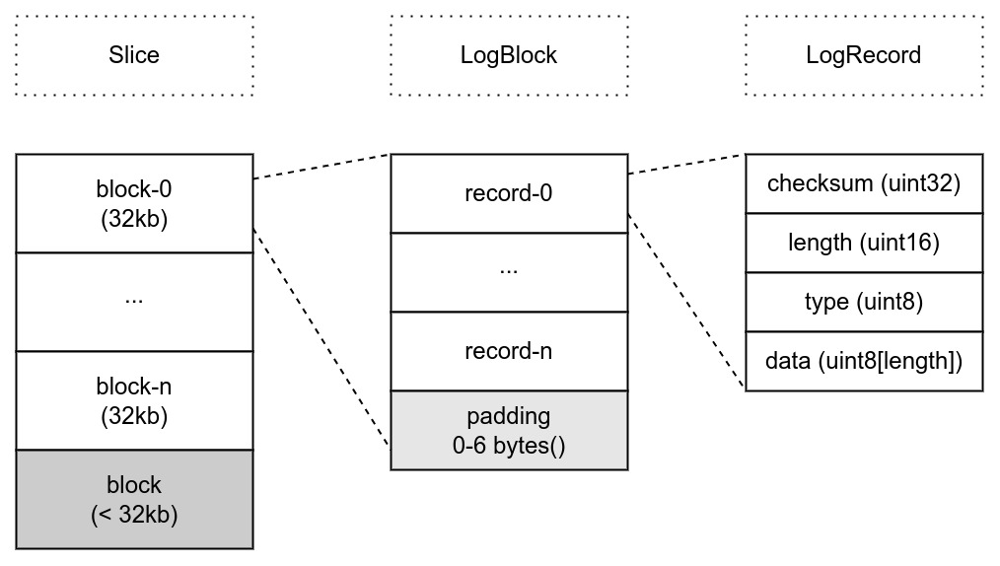
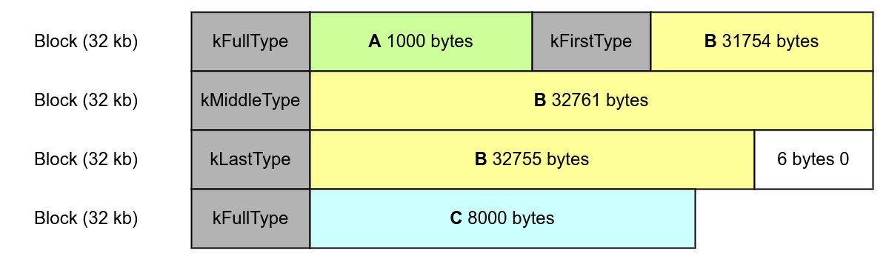

Ch07-LevelDB 之 WAL
May 25, 2022
WAL 一般用于故障恢复，其内容就是内存里 MemTable 内容的持久化，当一个 MemTable 写满后，开启一个新的 MemTable 时，也同时会开启一个新的 WAL，当 MemTable 被 Dump 到磁盘后，相应的 WAL 可以被删除。所以说控制每次 WAL 写入磁盘的方式，便可以控制最多可能丢失的数据量。
1. 数据结构 #

WAL 由若干个 LogBlock 组成，而 LogBlock 又由多个 LogRecord 组成。LogRecord 有 7 Byte 的固定开头，其中 4 Byte 是后面所有部分的 checksum，2 Byte 是数据的长度，1 Byte 该 LogRecord 的类型，剩余的 data 无固定大小。 （不过应该注意，在 LevelDB 并没有 LogBlock 和 LogRecord 这样的数据结构定义。
2. 接口定义 #
// log_writer.h
class Writer {
public:
Status AddRecord(const Slice& slice);
private:
Status EmitPhysicalRecord(RecordType type, const char* ptr, size_t length);
}
// log_reader.h
class Reader {
public:
bool ReadRecord(Slice* record, std::string* scratch);
}
}
3. RecordType 说明 #
LogRecord 中的 type 是为了解决写入数据时，LogBlock 里的空间不足以容纳数据的情况。
// db/log_format.h
enum RecordType {
kZeroType = 0,
kFullType = 1,
kFirstType = 2,
kMiddleType = 3,
kLastType = 4
};
举个例子，假如写入下述长度的数据。
A: length 1000
B: length 97270
C: length 8000

- 当前 LogBlock 里的空间足以容纳写入的数据，type 为 kFullType，表示当前 LogRecord 里包含所有的数据；
- 当前的 LogBlock 里的空间不足以容纳写入的数据时，将写入的数据拆分，用前面部分将当前 LogBlock 填满，这时候 type 就是 KFirstType，表示当前的 LogRecord 是数据的第一个部分；
- 接下来开始一个新的 LogBlock，如果这个 LogBlock 依然不能容纳所有的数据，这时候 type 就是 kMiddleType，表示这个 LogRecord 保存了中间部分的数据，后面还有数据；
- 当剩余的数据可以容纳到新的 LogBlock 时，这时候 type 就是 kLastType，表示这个记录的数据结束了，可以和前面的数据组合起来；
- kZeroType 是为了兼容 mmap 相关的代码，这种方式会先将数据分配好，置 0，所以当读取日志的文件读取这些 0 时，就可以跳过这些数据，我们不会写入这种类型的日志记录。